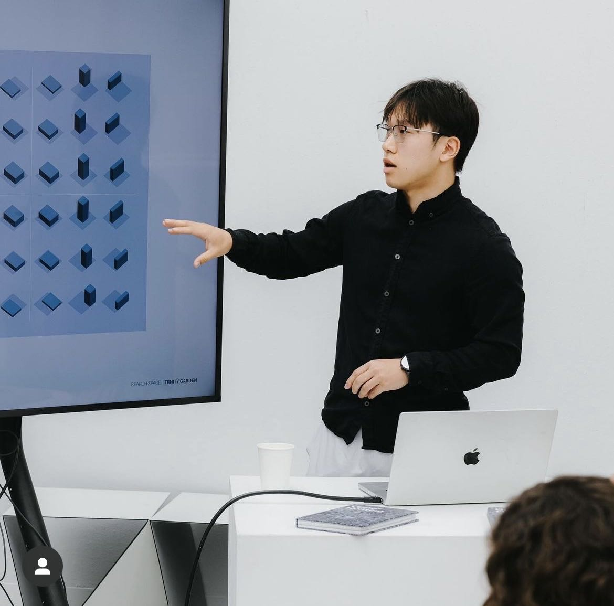

I'm David Chen, a graduate student at Carnegie Mellon University in the Master of Science in Computational Design (MSCD) program. My research interests include generative AI, Generative Adversarial Networks (GANs), and the integration of machine learning with architectural design. Currently, I am a Research Assistant working on a mixed reality project using Fologram, where I explore innovative digital fabrication methods and interactive design solutions.
